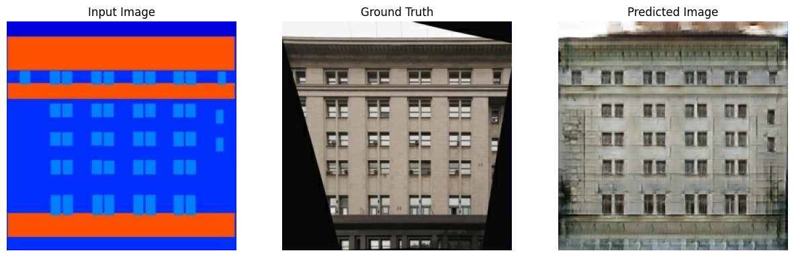
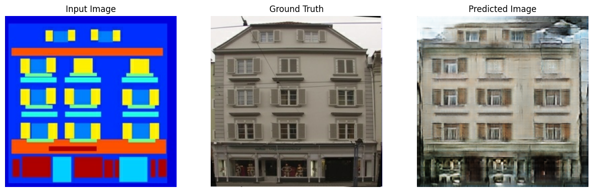

AI-Powered Image Generation: Transforming Abstract Ideas into Realistic Visions
OBJECTIVE
OBJECTIVE
The aim of this project is to revolutionize the architectural design process by transforming abstract sketches into realistic, detailed images using advanced deep learning techniques. This allows architects and designers to visualize their concepts more vividly and iterate designs quickly.
DATA
Model Architecture
- Generator: U-Net-based architecture.
- Discriminator: Convolutional PatchGAN classifier.
Implementation
To implement the meme-karaoke mash-up, the following shows the breakdown of features that were initially proposed and what were eventually implemented in the application:
- Model Training: Trained the GAN on a high-performance GPU for multiple epochs to ensure the generator could produce high-quality images.
- Optimization: Applied techniques like batch normalization and dropout to prevent overfitting and improve model generalization.
- Evaluation: Used metrics such as Structural Similarity Index (SSIM) and Peak Signal-to-Noise Ratio (PSNR) to assess the quality of generated images. Included loss evaluation using BinaryCrossentropy
- Image Generation: Defined a function generate_images to visualize the model's predictions alongside the input and ground truth images.
Technical Details
- Programming Languages: Python
- Libraries and Frameworks: TensorFlow, Keras, NumPy, Matplotlib
- Hardware: High-performance GPU for training
- Tools: Jupyter Notebook, Google Colab
Model Output
 